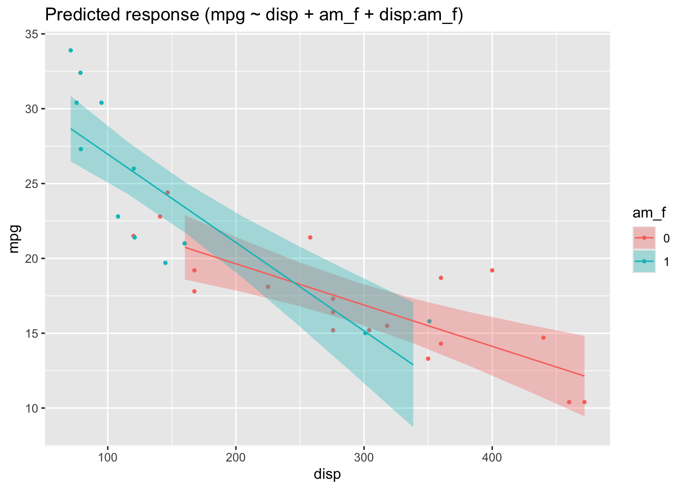

library(tidyverse)
library(easystats)5 More Regression

5.1 R-packages needed
For this chapter, the following R packages are needed.
5.2 Multiplicative associations
5.2.1 The Log-Y model
Consider again the linear model, in a simple form:
\[\hat{y} = \beta_0 + \beta_1 x_1 + \ldots + b_kx_k +\] Surprisingly, we can use this linear model to describe multiplicative assocations:
\(\hat{y} = e^{b_0 + b_1x_1 + b_2x_2 + \ldots + b_kx_k}\)
(I wrote b instead of \(\beta\) just to show that both has its meaning, but are separate things.)
Exponentiate both sides to get:
\(log (\hat{y}) = b_0 + b_1x_1 + b_2x_2 + \ldots + b_kx_k\)
For simplicity, let’s drop the subscripts in the following without loss of generality and keep it short:
\(y = e^{x}\), with \(\approx 2.71...\)
Exponentiate both sides to get:
\(log(y) = x\)
This association is called multiplicative, because if x increases by 1, y increased by a constant factor.
Note
The logarithm is not defined for negative (input) values. And \(log(0) = -\infty\).
A side-effect of modelling log_y instead of y is that the distribution shape of the outcome variable changes. This can be useful in times.
5.2.2 Exercise
Note
The exercises are written in German Language. Don’t fret. Browsers are able to translate websites instantaneously. Alternatively, go to sites such as Google Translate and enter the URL of the website to be translated. Also check out the webstor of your favorite browser to get an extention such as this one for Google Chrome.
5.2.3 Visualizing Log Transformation
Check out this post for an example of a log-y regression visualized.
This post puts some more weight to the argument that a log-y transformation is useful (if you want to model multiplicative relations).
5.2.4 Further reading
Check out this great essay by Kenneth Benoit on different log-variants in regression. Also Gelman, Hill, and Vehtari (2021), chapter 12 (and others), is useful.
5.3 Interaction
5.3.1 Multiple predictors, no interaction
Regression analyses can be used with more than one predictor, see Figure Figure 5.1.
flowchart LR X --> Y1 X1 --> Y2 X2 --> Y2
A different perspective is given by Figure Figure 5.2, where a 3D account of a regression is given. 3D means to input variables, and (which is always the case) one output variable.
Note
Note that the slope in linear in both axis (X1 and X2).

Important
If the slope for one predictor is the same for all values of the other predictor, then we say that no interaction is taking place.
Here’s a visualization of a 3D regression plane (not line) without interaction: constant slope in one axis, see Figure ?fig-3dregr2.


Note that the slope in each predictor axis equals 1, boringly. Hence the according 2D plots are boring, too, see Figure (3d-2dregr?).
For the sake of an example, consider this linear model:
\(mpg \sim hp + disp\)
Or, in more regression like terms:
\(y = \beta_0 + \beta_1 x_1 + \beta_2 x_2 + \epsilon\), where x1 is hp and x2 is disp in the mtcars dataset.
In R terms:
lm3d <- lm(mpg ~ hp + disp, data = mtcars)The 3D plot is shown in Figure Figure 5.6.

Here are the two corresponding 2d (1 predictor) regression models:
lm1 <- lm(mpg ~ hp, data = mtcars)
plot(estimate_relation(lm1))
lm2 <- lm(mpg ~ disp, data = mtcars)
plot(estimate_relation(lm2))
Checkout this post for a visually slightly more appealing 3d regression plane.
5.3.2 Interaction
For interaction to happen we relax the assumption that the slope of predictor 1 must be constant for all values of predictor 2.
In R, we specify an interaction model like this:
lm3d_interact <- lm(mpg ~ hp + disp + hp:disp, data = mtcars)The symbol hp:disp can be read as “the interaction effect of hp and disp”.
Here’s a visual account, see Figure Figure 5.7.
Compare Figure 5.7 and Figure 5.6.
In Figure 5.7 you’ll see that the lines along the Y axis are not parallel anymore. Similarly, the lines along the X axis are not parallel anymore.
Important
If the regression lines (indicating different values of one predictor) are not parallel, we say that an interaction effect is taking place.
However, the difference or change between two adjacent values (lines) is constant. This value is the size the regression effect.
5.3.3 Interaction made simple
If you find that two sophisticated, consider the following simple case.
First, we mutate am to be a factor variable, in order to make things simpler (without loss of generality).
mtcars2 <-
mtcars %>%
mutate(am_f = factor(am))Now we use this new variable for a simple regression model:
lm_interact_simple <- lm(mpg ~ disp + am_f + disp:am_f, data = mtcars2)Here’s the plot, Figure Figure 5.8.
plot(estimate_relation(lm_interact_simple))
In this picture, we see that the two regression lines are not parallel, and hence there is evidence of an interaction effect.
The interaction effect amounts to the difference in slops in Figure Figure 5.8.
One might be inclined to interpret Figure Figure 5.8 as an 3D image, where the one (reddish) line is in the foreground and the blueish line in the background (or vice versa, as you like). Given a 3D image (and hence 2 predictors), we are where we started further above.
For completeness, here are the parameters of the model.
| Parameter | Coefficient | SE | 95% CI | t(28) | p |
|---|---|---|---|---|---|
| (Intercept) | 25.16 | 1.93 | (21.21, 29.10) | 13.07 | < .001 |
| disp | -0.03 | 6.22e-03 | (-0.04, -0.01) | -4.44 | < .001 |
| am f (1) | 7.71 | 2.50 | (2.58, 12.84) | 3.08 | 0.005 |
| disp * am f (1) | -0.03 | 0.01 | (-0.05, -7.99e-03) | -2.75 | 0.010 |
5.3.4 Centering variables
The effect of of am_f must be interpreted when disp is zero, which does not make much sense.
Therefore it simplifies the interpretation of regression coefficients to center all input variables, by subtrating the mean value (“demeaning” or “centering”):
\[x' = x - \bar{x}\] In R, this can be achieved e.g,. in this way:
mtcars3 <-
mtcars2 %>%
mutate(disp_c = disp - mean(disp))lm_interact_simple2 <- lm(mpg ~ disp_c + am_f + disp_c:am_f, data = mtcars3)
parameters(lm_interact_simple2)Parameter | Coefficient | SE | 95% CI | t(28) | p
----------------------------------------------------------------------------
(Intercept) | 18.79 | 0.76 | [17.23, 20.36] | 24.63 | < .001
disp c | -0.03 | 6.22e-03 | [-0.04, -0.01] | -4.44 | < .001
am f [1] | 0.45 | 1.39 | [-2.40, 3.30] | 0.32 | 0.748
disp c * am f [1] | -0.03 | 0.01 | [-0.05, -0.01] | -2.75 | 0.010
Uncertainty intervals (equal-tailed) and p-values (two-tailed) computed
using a Wald t-distribution approximation.5.4 Predictor relevance
Given a model, we might want to know which predictor has the strongest association with the outcome?
In order to answer this question, all predictor must have the same scale. Otherwise the importance of a predictor would increase by 1000, if we multiply each of the observations’ values by the same factor. However, this multiplication should not change the relevance of a predictor.
A simple solution is to standardize all predictors to the same scale (sd=1).
mtcars4 <-
mtcars %>%
standardize(select = c("disp", "hp", "cyl"))By the way, “standardizing” centers the variable by default to a mean value of zero (by demeaning).
See:
head(mtcars4$disp)[1] -0.57061982 -0.57061982 -0.99018209 0.22009369 1.04308123 -0.04616698head(mtcars$disp)[1] 160 160 108 258 360 225Here’s the SD:
sd(mtcars4$disp)[1] 1sd(mtcars$disp)[1] 123.9387And here’s the mean value:
mean(mtcars4$disp)[1] -9.084937e-17mean(mtcars$disp)[1] 230.7219Now we are in a position to decide which predictor is more important:
m <- lm(mpg ~ disp + hp + cyl, data = mtcars4)
parameters(m)Parameter | Coefficient | SE | 95% CI | t(28) | p
------------------------------------------------------------------
(Intercept) | 20.09 | 0.54 | [18.98, 21.20] | 37.20 | < .001
disp | -2.33 | 1.29 | [-4.98, 0.31] | -1.81 | 0.081
hp | -1.01 | 1.00 | [-3.06, 1.05] | -1.00 | 0.325
cyl | -2.19 | 1.42 | [-5.11, 0.72] | -1.54 | 0.135
Uncertainty intervals (equal-tailed) and p-values (two-tailed) computed
using a Wald t-distribution approximation.5.5 Exercises
5.6 Lab
Get your own data, and build a simple model reflecting your research hypothesis based on the topics covered in this chapter. If you are lacking data (or hypothesis) get something close to it.
5.7 Glimpse on parameter estimation
An elegant yet simple explanation of the math of parameter estimation can be found at “go data driven”. A similar approach is presented here.
Here’s the essence of a geometric interpretation of the least square method, see Figure Figure 5.9.

5.8 Further Reading
Mathematical foundations can be found in Deisenroth, Faisal, and Ong (2020). Here’s a collection of online resources tapping into statistics and machine learning.